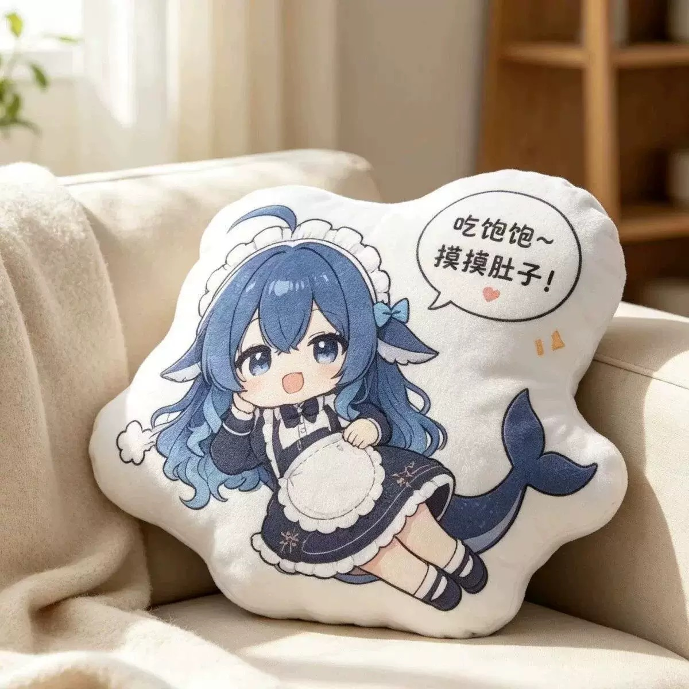

All designs / Design 06
Full Belly Edition
Reclining pose with the legs kicked out and a hand over a full belly. Widest of the set — the horizontal spread of the legs and tail makes a low, sofa-friendly shape that sits flat on a cushion rather than leaning.
- Design06 of 14
- ShapeWide landscape cushion (~4:3 die-cut)
- ColoursNavy, cream white, glacier-blue gradient hair
- FinishDye-sublimation printed plush face, soft short-pile fabric
- Photo1200 × 1200 JPEG, indoor daylight, neutral sofa / bedroom setting
- OrderingQuote on request — Telegram @DK88878
Want this design? Send the design number (06) plus your country to @DK88878 on Telegram and you'll get size options, fabric choices and a quote.
Message @DK88878 on Telegram